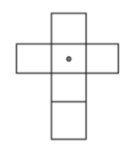

85. BÖLÜM
Değişim.
Ne olduğunu duyan Başrahip Galloway’in olanları görmesine gerek yoktu.
Masanın karşısındaki Langdon ile Katherine ölüm sessizliğine bürünmüşler, gözlerinin önünde gürültüyle başkalaşım geçiren taş küpe hiç şüphesiz şaşkınlıkla bakıyorlardı.
Galloway gülümsemekten kendini alamadı. Bu sonucu zaten bekliyordu ama piramidin bulmacasını çözmelerine nasıl yardımcı olacağı konusunda hâlâ bir fikri yoktu. Buna rağmen bir Harvard simgebilim profesörüne sembollerle ilgili bir şey öğretme fırsatını yakalamanın keyfini çıkarıyordu.
Başrahip, “Profesör,” dedi. “Masonların küp şekline -veya bizim deyişimizle kesmetaşa- hürmet gösterdiğini çok az kişi bilir, çünkü çok daha eski iki boyutlu bir sembolün... üç boyutlu halini temsil eder.” Galloway’in profesöre, şimdi masanın üstünde yatan eski sembolü tanıyıp tanımadığını sormasına gerek yoktu. Dünyadaki en ünlü sembollerden biriydi.
Karşısındaki masanın üstünde duran değişim geçirmiş kutuya bakan Robert Langdon’ın aklında binlerce düşünce dolaşıyordu.
Saniyeler önce taş küpün içine uzanmış, mason yüzüğünü tutmuş ve nazikçe çevirmişti. Yüzüğü otuz üç derece çevirdiğinde, küp gözlerinin önünde şekil değiştirmişti. Kutunun gizli menteşeleri serbest kalınca, yan kenarlarını meydana getiren yüzeyler birbirinden ayrılarak açılmıştı. Kutu bir anda dağılmış, kenarları ve kapağı masanın üstüne gürültüyle düşmüştü.

Langdon, kutu haç şeklini aldı, diye düşündü. Sembolik simya.
Katherine, dağılan küpe hayretle bakıyordu. “Mason Piramidi... Hıristiyanlıkla mı ilgili?”
Bir an için Langdon da aynı şeyi düşünmüştü. Ne de olsa Hıristiyan haçı, masonlar arasında saygı duyulan bir semboldü ve pek çok Hıristiyan mason bulunduğu muhakkaktı. Ama masonlar arasında Yahudiler, Müslümanlar, Budistler, Hindular ve tanrılarına isim vermeyenler de vardı. Hıristiyanlığa özgü bir sembol fazlasıyla kısıtlayıcı olurdu. Sonra, bu sembolün gerçek anlamı aklına geldi.
Ayağa kalkan Langdon, “Bu bir haç değil,” dedi. “Ortasında noktalı daire sembolüyle haç, birleşik bir semboldür, üst üste binen iki sembol tek bir sembolü meydana getirir.”
“Ne demek istiyorsun?” Langdon aşağı yukarı yürürken Katherine gözleriyle onu takip ediyordu.
Langdon, “Haç, dördüncü yüzyıla kadar bir Hıristiyanlık sembolü değildi,” dedi. “Bundan çok önce Mısırlılar tarafından, iki boyutun kesişimini -insanla ilahların- temsil etmesi için kullanılıyordu. Aşağıdaki yukarıdakine, yukarıdaki aşağıdakine benzer. İnsanla Tanrı’nın bir olduğunun görsel bir temsiliydi.”
“Peki.”
Langdon, “Ortasında nokta bulunan dairenin pek çok anlamı olduğunu zaten biliyoruz,” dedi. “En ezoterik anlamlarından biri, simyada mükemmelliği temsil eden güldür. Ama bir haçın tam ortasına gülü yerleştirdiğimiz zaman bambaşka bir sembol elde ederiz; Gül Haçı olur.”
Galloway gülümseyerek sandalyesine yaslandı. “Şu işe bakın. İşte şimdi anlamaya başladınız.”
Katherine de ayağa kalkmıştı. “Ben neyi anlamıyorum?”
Langdon, “Gül Haçı, farmasonlukta sık kullanılan bir semboldür,” diye açıkladı. “Doğrusu İskoç Riti’ndeki derecelerden biri de masonluğun gizemli felsefesine katkıda bulunan ilk Gül Haçlıların onuruna isimlendirilen ‘Güç Haçı Şövalyesi’dir. Peter sana Gül Haçlıları anlatmış olabilir. Büyük bilim adamlarından düzinelercesi üyeleri arasındaydı; John Dee, Elias Ashmole, Robert Şudd...”
Katherine, “Kesinlikle,” dedi. “Araştırmalarımda Gül Haçlıların tüm bildirilerini okudum.”
Langdon, tüm bilim adamları okumalı, diye düşündü. Gül Haçı Tarikatı’nın -veya daha resmi adıyla Eski ve Gizemli Rosae Crucis Tarikatı- bilimi önemli ölçüde etkileyen ve Antik Gizemler efsanesiyle örtüşen esrarengiz bir tarihi vardı... Eski bilgelerin sahip olduğu gizli hikmet asırlar boyunca, sadece en parlak zekâlar tarafından öğrenilmişti. Doğrusu Rönesans Avrupa’sındaki tüm aydınların isimleri tarihteki ünlü Gül Haçlılar listesinde vardı: Paracelsus, Bacon, Şudd, Descartes, Pascal, Spinoza, Newton, Leibniz.
Güç Haçlılar öğretisine göre, tarikat “eskilerin ezoterik gerçekleri üzerine kurulmuştu”. Manevi dünyaya ışık tutan bu gerçeklerin “sıradan insanlardan saklı tutulması” gerekiyordu. Yıllar içinde kardeşliğin sembolü süslü bir haçın üstündeki gonca güle dönüşmüş olsa da ilk başta sade bir haçın üstündeki noktalı bir çemberdi, yani en basit haç betimlemesinin üstündeki en basit gül betimlemesiydi.
Galloway, Katherine’e, “Peter’la ben Gül Haçlıların felsefesini sık sık tartışırdık,” dedi.
Başrahip, masonlarla Gül Haçlılar arasındaki yakın ilişkiyi anlatmaya başladığında, Langdon dikkatinin, bütün gece aklını kurcalayan düşünceye çevrildiğini hissetti. Jeova Sanctus Unus. Bu söz bir şekilde simyayla ilgili. Hâlâ Peter’ın ona bu sözle ilgili anlattıklarını hatırlayamıyordu ama bir sebepten ötürü, Gül Haçlıların isminin geçmesi bu düşüncenin canlanmasına yol açmıştı. Düşün Robert!
Galloway, “Gül Haçlıların kurucusunun, Christian Rosenkreuz ismiyle bilinen Alman bir gizemci olduğu söylenir,” diyordu. “Elbette bir takma isim olduğu belli, hatta bir kanıt olmadığı halde bazı tarihçiler bu kişinin Francis Bacon olduğuna inanırlar...”
Aniden, “Bir takma isim!” diye bağıran Langdon’ın kendi de şaşırmıştı. “İşte bu! Jeova Sanctus Unus! Bu bir takma isim!”
Katherine, “Neden bahsediyorsun?” diye sordu.
Langdon’ın nabzı hızlanmıştı. “Bütün akşam Peter’ın bana Jeova Sanctus Unus ve bunun simyayla ilişkisi hakkında anlattıklarını hatırlamaya çalıştım. Sonunda hatırladım! Aslında simyayla değil, daha çok bir simyacıyla ilgili! Çok ünlü bir simyacı!”
Galloway kendi kendine güldü. “Vakti gelmişti profesör. İsmini iki kere zikrettim, hatta takma isim de dedim.”
Langdon, yaşlı başrahibe baktı. “Biliyor muydunuz?”
“Ee, bana Jeova Sanctus Unus dediğinizde ve Dürer’in simyayla ilgili sihirli karesini kullanarak bu sözü deşifre ettiğinizi anlattığınızda şüphelenmiştim ama Gül Haçı bulduğunuzda artık emin oldum. Sizin de bildiğiniz gibi, bahsi geçen bilim adamının özel kâğıtları arasında, Gül Haçlıların bildirilerinin bolca dipnot düşülmüş bir kopyası bulunuyordu.”
Katherine, “Kim?” diye sordu.
Langdon, “Dünyanın en büyük bilim adamlarından biri!” diye yanıtladı. “Bir simyacı, Londra Kraliyet Akademisi’nin üyesi ve bir Gül Haçlıydı. Ayrıca en gizli bilimsel çalışmalarını ‘Jeova Sanctus Unus’ takma ismiyle imzalardı.”
Katherine, “Tek bir Tanrı mı?” dedi. “Mütevazı bir adam.”
Galloway, “Aslında bir dâhi,” diyerek düzeltti. “İsmini bu şekilde yazıyordu, çünkü tıpkı eski bilgeler gibi o da ilahi bir varlık olduğunu biliyordu. Ayrıca Jeova Sanctus Unus’taki on altı harfin yerleri değiştirildiğinde isminin Latince karşılığı okunuyor ve onun için mükemmel bir takma isim oluşturuyordu.”
Katherine şaşırmış görünüyordu. “Jeova Sanctus Unus ünlü bir simyacının Latince ismi mi?”
Langdon, başrahibin masasından bir kalem kâğıt alıp, konuşurken bir yandan da yazmaya başladı. “Latincedeki J harfi I ile, V harfi ise U ile yer değiştirebilir. Jeova Sanctus Unus’taki harşerin yerleri bu şekilde değiştirildiğinde, bu adamın ismini elde ediyoruz.”
Langdon on altı harfi yazdı: Isaacus Neutonuus.
Kâğıdı Katherine’e uzatıp, “Adını duyduğunu düşünüyorum,” dedi.
Kâğıda bakan Katherine, “Isaac Newton mı?” diye sordu. “Piramidin üstündeki yazı bize bunu mu anlatmaya çalışıyordu?”
Langdon bir an için yeniden Westminster Abbey’de durduğu an yaşadığı deneyimi yaşadığını hissetti. Newton’ın piramidi andıran mezarının başında. Ve bu gece büyük bilim adamı yeniden ortaya çıkıyor. Elbette bu bir tesadüf değildi... Piramitler, gizemler, bilim, gizli bilgi... bunların hepsi iç içe geçmişti. Newton’ın ismi, gizli bilgiyi arayanların hep karşısına çıkan bir işaret direğiydi.
Galloway, “Isac Newton’ın, piramidin anlamının nasıl çözüleceğiyle bir ilgisi olmalı,” dedi. “Ne olduğunu tahmin edemiyorum ama...”
Gözleri büyüyen Katherine, “Dâhice!” diye bağırdı. “Piramidi bu şekilde değiştireceğiz!”
Langdon, “Anlıyor musun?” dedi.
Katherine, “Evet!” dedi. “Bunu daha önce görmediğimize inanamıyorum. Çok basit bir simya işlemi. En basit bilimi kullanarak bu piramidi değiştirebilirim! Newton bilimi!”
Langdon, Katherine’in söylediklerini anlamaya çalışıyordu.
Katherine, “Başrahip Galloway,” dedi. “Yüzüğü okuduysanız, diyor ki...”
“Durun!” Yaşlı başrahip aniden parmağını yukarı kaldırıp, sessiz olmalarını işaret etti. Sanki bir şey dinliyormuş gibi başını nazikçe yan tarafa çevirdi. Bir süre sonra ayağa kalktı. “Dostlarım, bu piramidin henüz açığa çıkmamış sırları olduğu belli. Bayan Solomon’ın nereye varacağını bilmiyorum ama bir sonraki adımınızı biliyorsa, ben kendi payıma düşen rolü oynadım demektir. Eşyalarınızı toplayın ve bana başka bir şey söylemeyin. Şimdilik beni karanlıkta bırakın. Ziyaretçilerimiz beni zorlarsa, hiçbir bilgim olmamasını tercih ederim.”
Kulak kesilen Katherine, “Ziyaretçiler mi?” diye sordu. “Ben kimseyi duyamıyorum.”
Kapıya yönelen Galloway, “Duyacaksınız,” dedi. “Acele edin.”
Şehrin öbür ucundaki baz istasyonu, Massachusetts Bulvarı’nda paramparça yatan bir cep telefonuyla bağlantı kurmaya çalışıyordu. Sinyal bulamayınca çağrıyı telesekretere yönlendirdi.
Warren Bellamy’nin panik içindeki sesi, “Robert!” diyordu. “Neredesin?! Beni ara! Korkunç bir şey oluyor!”